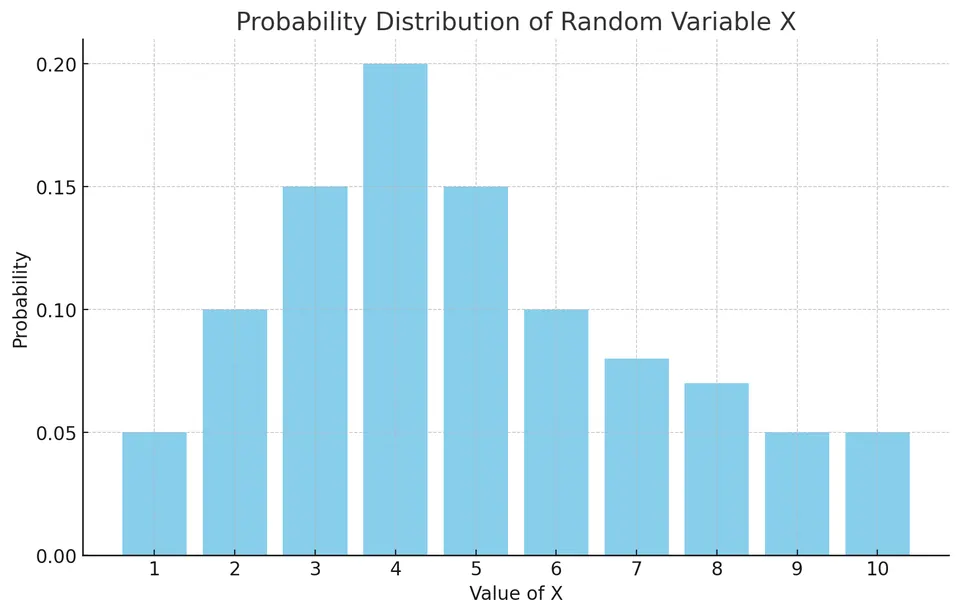
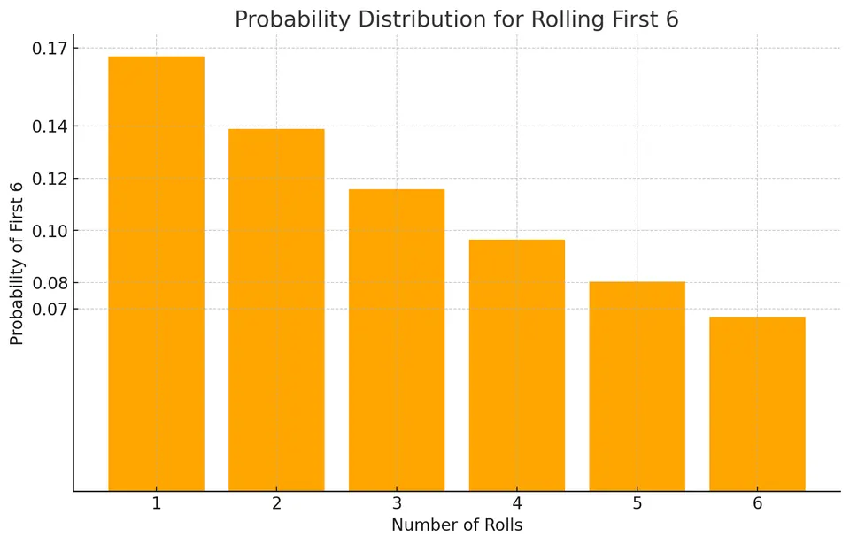
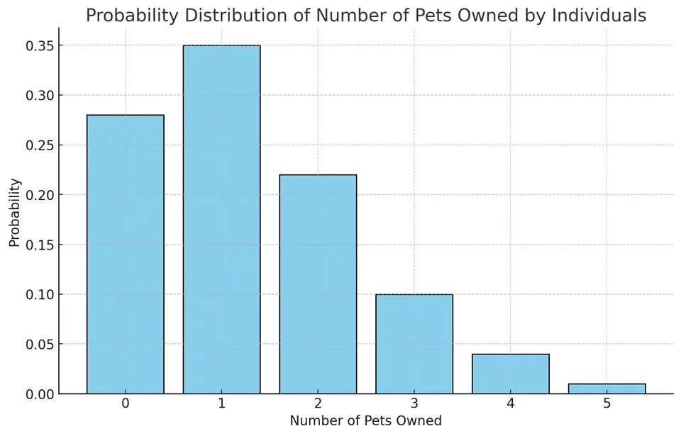
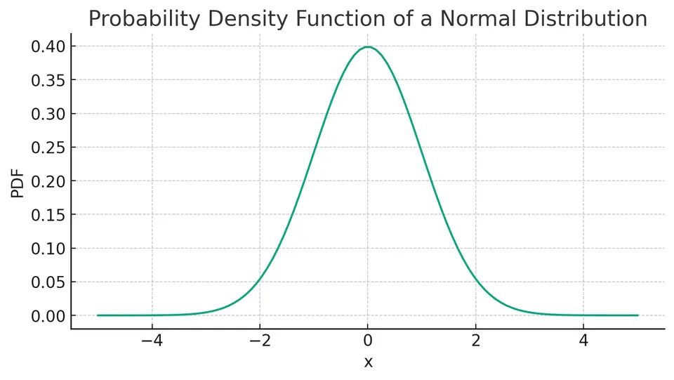
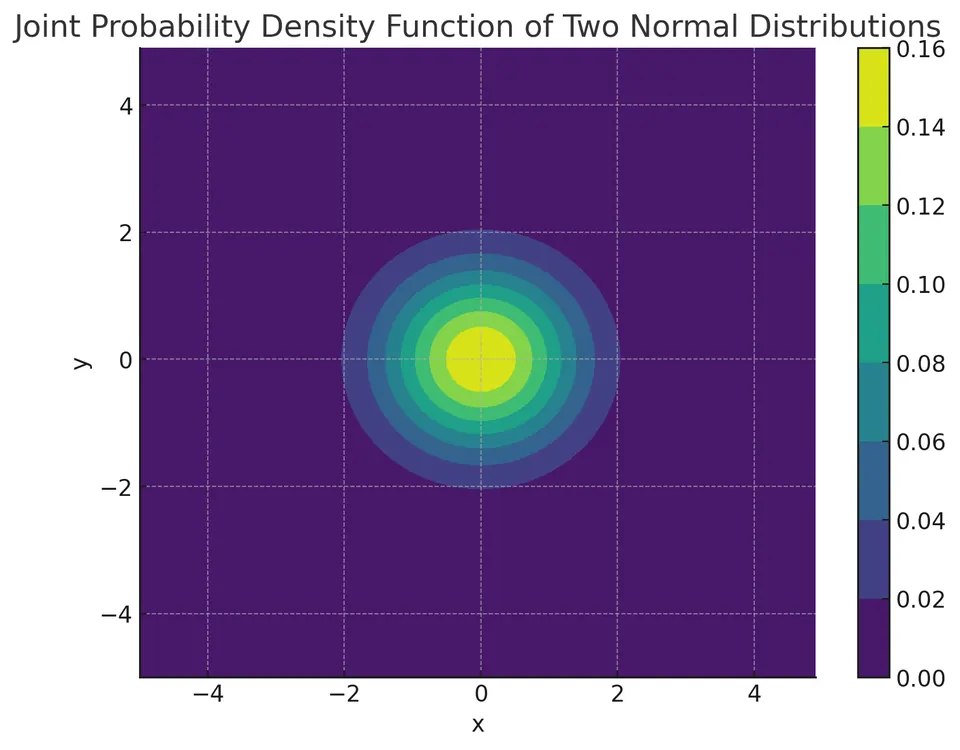
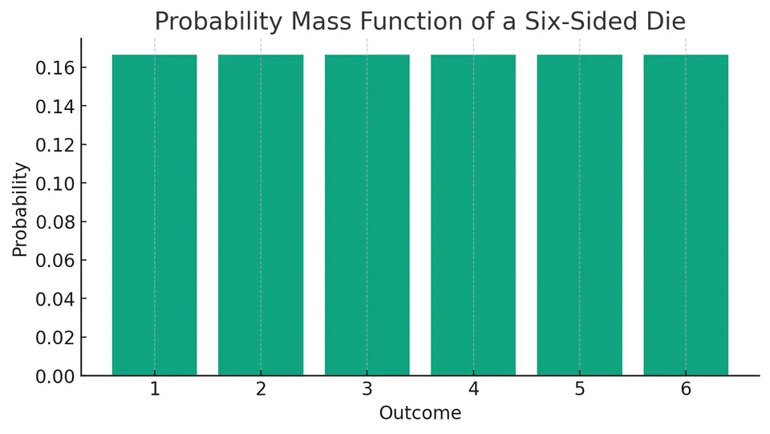
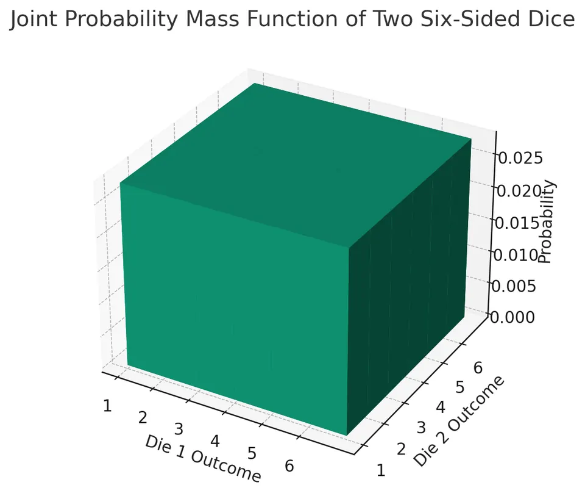
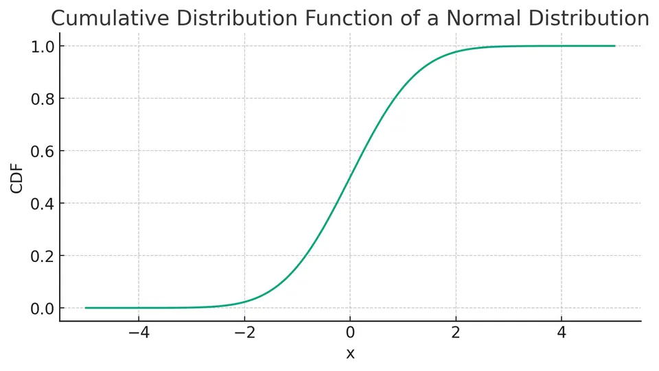
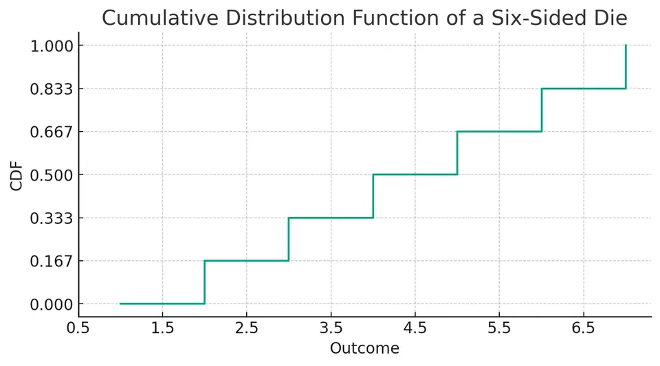

Last modified: September 13, 2026
This article is written in: 🇺🇸
Introduction to Distributions
A distribution is a function that describes the probability of a random variable. It helps to understand the underlying patterns and characteristics of a dataset. Distributions are widely used in statistics, data analysis, and machine learning for tasks such as hypothesis testing, confidence intervals, and predictive modeling.
Random Variables
Random variables assign numerical values to outcomes of random processes in probability and statistics. Random variables can be discrete (taking specific values) or continuous (taking any value within a range).
Example: Drawing a Card from a Deck
- Suit of the Card (Discrete): Assigns a category based on the suit (e.g., hearts, spades).
- Rank of the Card (Discrete): Numerical value or face (e.g., 2, 10, King).
- Color of the Card (Discrete): Red or Black.
Example: Weather Forecast
- Temperature (Continuous): The forecasted temperature in degrees.
- Chance of Precipitation (Continuous): Probability of rain or snow, expressed in percentage.
- Wind Speed (Continuous): Speed of the wind in kilometers or miles per hour.
Probability Calculations
- Discrete Example (Card Drawing): If X represents the suit of a card, $P(X = Hearts)$ is the probability of drawing a heart.
- Continuous Example (Temperature): If Y represents temperature, $P(Y > 20°C)$ is the chance that the temperature is above 20 degrees Celsius.
- General Probability Notations: Calculate probabilities like $P(X < x), P(X ≤ x), P(X > x), P(X ≥ x)$, where 'x' is a specific value.
Types of Probability Distributions
- Probability Distribution: A mathematical description of the likelihood of different outcomes in an experiment or process.
- Discrete Probability Distributions: Used for discrete variables (e.g., counting outcomes like the number of heads in coin flips).
- Continuous Probability Distributions: Used for continuous variables (e.g., measurements like height or weight).
Example: Probability Distribution of a Discrete Random Variable
Consider a discrete random variable $X$ with the following probability distribution:
| Value of $X$ |
Probability $p_X(x)$ |
| 1 |
0.05 |
| 2 |
0.10 |
| 3 |
0.15 |
| 4 |
0.20 |
| 5 |
0.15 |
| 6 |
0.10 |
| 7 |
0.08 |
| 8 |
0.07 |
| 9 |
0.05 |
| 10 |
0.05 |
- Higher Probability Values: The value 4 has the highest probability (0.20), suggesting that it is the most likely outcome.
- Comparing Probabilities: The probability of getting a 4 is higher than getting a 10, as indicated by their respective probabilities (0.20 vs. 0.05).
- Sum of Probabilities: The sum of all these probabilities equals 1, confirming that the table represents a complete probability distribution.
This table can be visualized using a bar graph, with the height of each bar representing the likelihood of each outcome.

Example: Roll a Six-Sided Die Until a 6 Appears
Roll a fair six-sided die repeatedly until the die shows a 6.
| Number of Rolls |
Probability |
| 1 |
1/6 ≈ 0.1667 |
| 2 |
(5/6) * (1/6) ≈ 0.1389 |
| 3 |
(5/6)^2 * (1/6) ≈ 0.1157 |
| 4 |
(5/6)^3 * (1/6) ≈ 0.0964 |
| 5 |
(5/6)^4 * (1/6) ≈ 0.0803 |
| 6 |
(5/6)^5 * (1/6) ≈ 0.0669 |

Find the probability that the first 6 appears:
- On the third roll.
- On the third or fourth roll.
- In less than five rolls.
- In no more than three rolls.
- After three rolls.
- In at least three rolls.
Now let's do calculations:
- $P(3) = (5/6)^2 * (1/6) ≈ 0.1157$
- $P(3 \text{ or } 4) = P(3) + P(4) ≈ 0.1157 + 0.0964 ≈ 0.2121$
- $P(X < 5) = P(1) + P(2) + P(3) + P(4) ≈ 0.1667 + 0.1389 + 0.1157 + 0.0964 ≈ 0.5177$
- $P(X \leq 3) = P(1) + P(2) + P(3) ≈ 0.1667 + 0.1389 + 0.1157 ≈ 0.4213$
- $P(X > 3) = 1 - P(X \leq 3) ≈ 1 - 0.4213 ≈ 0.5787$
- $P(X \geq 3) = P(3) + P(4) + P(5) + P(6) + ... ≈ 0.1157 + 0.0964 + 0.0803 + 0.0669 + ...$
Example: Number of Pets Owned by Individuals
Consider the following probability distribution for the number of pets $P$ owned by individuals.
| $P$ |
$P(P)$ |
| 0 |
0.28 |
| 1 |
0.35 |
| 2 |
0.22 |
| 3 |
0.10 |
| 4 |
0.04 |
| 5 |
0.01 |

Find the probability that an individual owns:
- Less than 2 pets.
$P(P < 2) = P(P = 0) + P(P = 1) = 0.28 + 0.35 = 0.63$
- More than 3 pets.
$P(P > 3) = P(P = 4) + P(P = 5) = 0.04 + 0.01 = 0.05$
- 1 or 4 pets.
$P(P = 1 \text{ or } P = 4) = P(P = 1) + P(P = 4) = 0.35 + 0.04 = 0.39$
- At most 3 pets.
$P(P \leq 3) = P(P = 0) + P(P = 1) + P(P = 2) + P(P = 3) = 0.28 + 0.35 + 0.22 + 0.10 = 0.95$
- 2 or fewer, or more than 4 pets.
$P(P \leq 2 \text{ or } P > 4) = P(P \leq 2) + P(P > 4) = (0.28 + 0.35 + 0.22) + 0.01 = 0.86$
Expected Value
- The expected value (often denoted as $E(X)$ or $\mu$) is a fundamental concept in probability, representing the average or mean value of a random variable over a large number of trials or observations.
- It is calculated as a weighted average of all possible values, with weights being their respective probabilities.
- The expected value alone might not be sufficient to understand a distribution fully, especially if the distribution is skewed or has heavy tails.
- The expected value provides a measure of the 'center' of a probability distribution.
- It does not necessarily correspond to the most probable value but is a long-run average if an experiment is repeated many times.
Calculating Expected Value
- For a discrete random variable: $E(X) = \sum [x_i \times P(x_i)]$, where $x_i$ are the possible values and $P(x_i)$ their probabilities.
- For a continuous random variable, it involves integrating the product of the variable's value and its probability density function.
Example: Expected Value in a Dice Roll
Consider a fair six-sided dice roll. Each side, numbered from 1 to 6, has an equal probability of appearing on a single roll. The probability for each outcome is $\frac{1}{6}$.
Step-by-Step Calculation of Expected Value:
I. List All Possible Outcomes and Their Probabilities.
| Outcome (X) |
Probability $P(X)$ |
| 1 |
1/6 |
| 2 |
1/6 |
| 3 |
1/6 |
| 4 |
1/6 |
| 5 |
1/6 |
| 6 |
1/6 |
II. Multiply Each Outcome by Its Probability.
- For 1: $1 \times \frac{1}{6}$
- For 2: $2 \times \frac{1}{6}$
- For 3: $3 \times \frac{1}{6}$
- For 4: $4 \times \frac{1}{6}$
- For 5: $5 \times \frac{1}{6}$
- For 6: $6 \times \frac{1}{6}$
III. Sum Up the Products.
$$
E(X) = (1 \times \frac{1}{6}) + (2 \times \frac{1}{6}) + (3 \times \frac{1}{6}) + (4 \times \frac{1}{6}) + (5 \times \frac{1}{6}) + (6 \times \frac{1}{6})
$$
$$E
(X) = \frac{1 + 2 + 3 + 4 + 5 + 6}{6} = \frac{21}{6}
$$
$$
E(X) = 3.5
$$
IV. Interpretation:
- The expected value of $E(X) = 3.5$ suggests that over a large number of dice rolls, the average value of the outcomes will converge to 3.5.
- It's important to note that while 3.5 is not a possible outcome of a single roll, it represents the long-term average or the 'center' of the distribution of outcomes.
- This concept is a cornerstone in probability theory, providing a predictive measure of the behavior of a random variable over many trials.
Probability Density Function (PDF) - Continuous Variables
For continuous random variables, the PDF provides the probability density at a specific point $x$. The area under the curve between two points on the PDF represents the probability of the variable falling within that range.
$$f_X(x)$$
Properties:
- Non-negative: $f_X(x) \geq 0$ for all $x$.
- Normalization: The total area under the curve of the PDF is 1.
Joint PDF for Multiple Variables: For two continuous random variables $X$ and $Y$, the joint PDF $f_{X,Y}(x, y)$ gives the density at a particular point $(x, y)$.


Probability Mass Function (PMF) - Discrete Variables
For discrete random variables, the PMF specifies the probability of the variable taking a particular value $x$. Directly find the probability of specific outcomes.
$$
p_X(x) = P(X = x)
$$
Properties:
- Non-negative: $p_X(x) \geq 0$ for all $x$.
- Sum to One: The sum of all probabilities for all possible values of $X$ is 1.
Joint PMF for Multiple Variables: For two discrete random variables $X$ and $Y$, the joint PMF $p_{X,Y}(x, y)$ gives the probability of $X$ and $Y$ simultaneously taking values $x$ and $y$, respectively.


Cumulative Distribution Function (CDF) - Both Continuous and Discrete Variables
The CDF shows the probability that a random variable is less than or equal to a specific value $x$. Calculate the probability of the variable falling below a certain threshold.
$$
F_X(x) = P(X \leq x)
$$
Properties:
- Non-decreasing function.
- $\lim_{x \to \infty} F_X(x) = 1$.
- $\lim_{x \to -\infty} F_X(x) = 0$.
- Right-continuous: For any $x$ and decreasing sequence $x_n$ converging to $x$, $\lim_{x_n \to x^+} F_X(x_n) = F_X(x)$.
Joint CDF: For two variables $X$ and $Y$, $F(a, b) = P(X \leq a, Y \leq b)$. To derive the marginal distribution of $X$: $F_X(a) = \lim_{b \to \infty} F(a, b)$.

